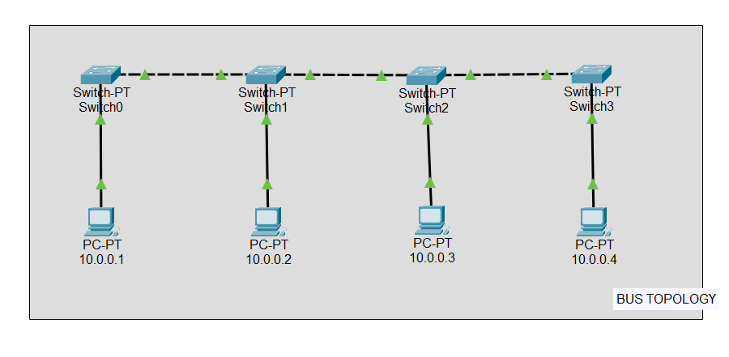
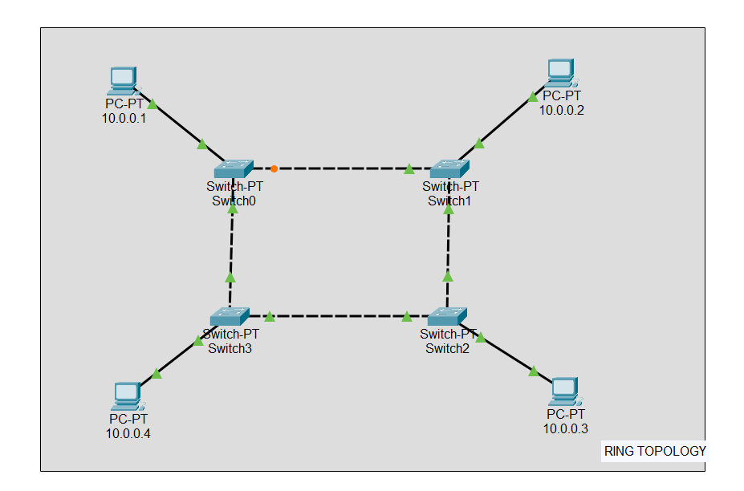
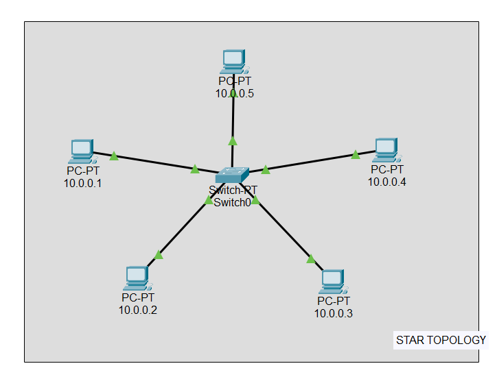
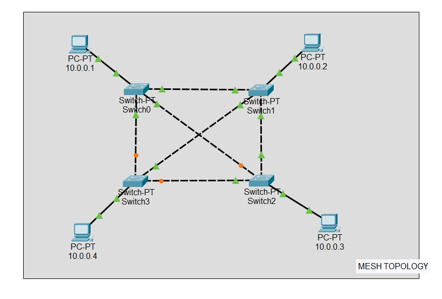
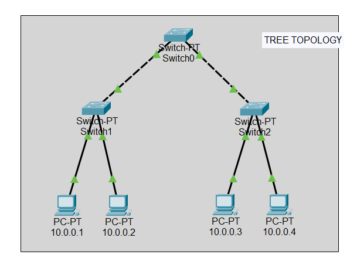
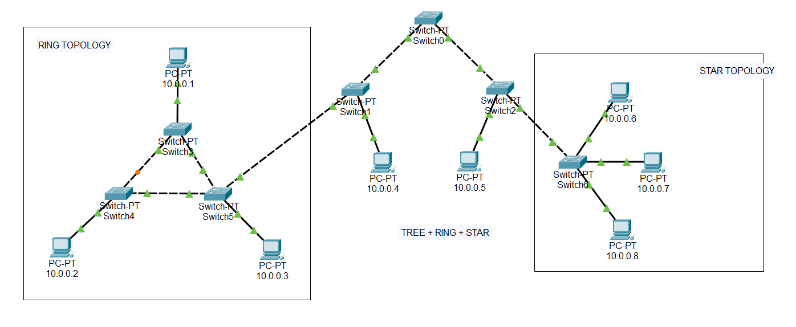

Network Topologies
Bus
Bus Topology
Single backbone cable connecting multiple nodes

RingRing Topology
Circular data flow with token passing

StarStar Topology
Central switch/hub connecting all nodes

MeshMesh Topology
Each node connects directly to every other node

TreeTree Topology
Hierarchical structure combining bus & star

HybridHybrid Topology
Combination of two or more network topologies
